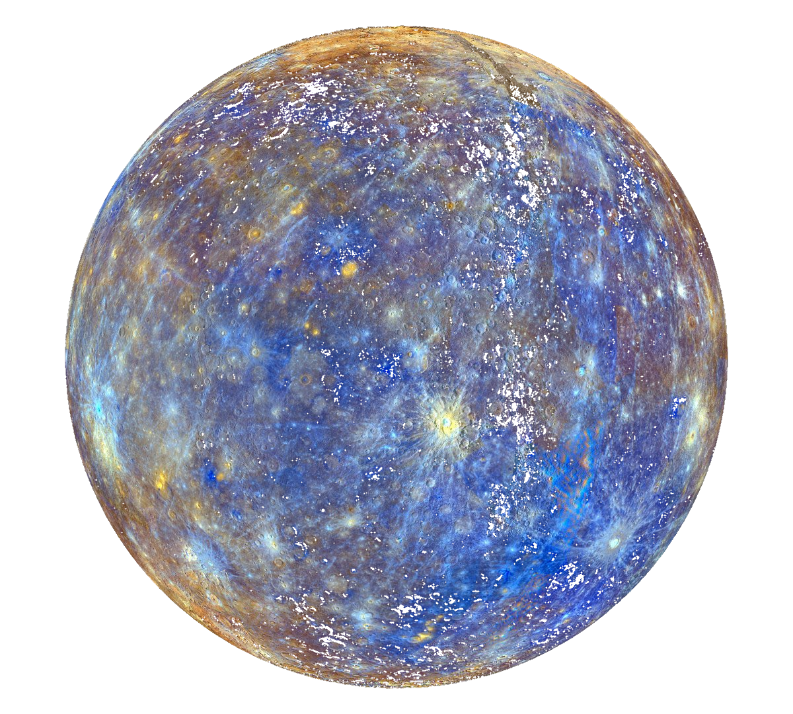

Volver
|  |
DefiniciónCon un tamaño tan solo un poco mayor al de nuestra luna, Mercurio es el más pequeño de los planetas del sistema solar y el más cercano al Sol. A pesar de su pequeño tamaño este planeta ya era conocido al menos desde la época de los Sumerios, hace 5.000 años. Posteriormente los griegos lo bautizaron como Hermes, en honor al mensajero de los dioses del olimpo, el cual más tarde fue conocido por los romanos como Mercurio, nombre con el que ha llegado hasta nuestros días. El Sol, nuestra estrella, se sitúa en el centro del sistema solar y rige todo lo que sucede en su interior. Por ello, no es de extrañar que decenas de culturas a lo largo y ancho de nuestro planeta y durante el transcurso de los siglos, hallan considerado al Sol como una divinidad a la que se le ha reservado un lugar especial. Características principales de MercurioEl nombre de este planeta no es casualidad pues, al igual que Mercurio era el más veloz de los dioses del Olimpo, con una velocidad de 170.5030 kilómetros por hora, el planeta Mercurio es el que viaja más rápido a través del espacio en nuestro sistema solar. Además, la órbita de Mercurio es la más excéntrica entre todos los planetas que orbitan el Sol, al que tarda 88 días en dar una vuelta completa. Por su proximidad a nuestra estrella, desde la superficie de Mercurio nuestro Sol se vería 3 veces más grande que desde la Tierra, y su brillo sería hasta 7 veces superior. Del mismo modo, cabría esperar que, por su cercanía al Sol, Mercurio fuera el planeta más caliente del sistema solar, sin embargo, contradiciendo la intuición, este honor es para el Venus, pues es en Venus que, debido a su densa atmósfera, se registran las temperaturas más altas de todo el sistema solar. También cabe decir que eje de rotación de Mercurio está inclinado apenas 2 grados con respecto al plano de su órbita alrededor del Sol. Eso significa que gira casi perfectamente en posición vertical y, por lo tanto, no experimenta estaciones. Estructura, geología y composición de MercurioMercurio es uno de los 4 planetas interiores del sistema solar, por tanto pertenece al grupo de los planetas rocosos y está formado aproximadamente en un 70% de elementos metálicos y un 30% de silicatos. Con un diámetro de 4.879 kilómetros en el ecuador, la gran cantidad de metales de Mercurio hacen de él el segundo planeta más denso del sistema solar; así, con una densidad de 5430 kg/m³ solo es superado por la Tierra. Los científicos creen que el núcleo de Mercurio debe ocupar gran parte del planeta, cerca del 61%, y además ser rico en hierro. Este núcleo, que se extiende desde el centro del planeta hasta un radio de unos 2.100 kilómetros, al igual que sucede con nuestro planeta, estaría rodeado por un manto, en esta ocasión de unos 600 kilómetros, y una corteza de entre 100 y 200 kilómetros. Como se detalla con anterioridad, Mercurio es el menor de los planetas rocosos del sistema solar y de manera similar a la Luna, presenta una superficie rica en azufre, magnesio y silicio, plagada de cráteres, en parte, debido a la finísima y casi ausente atmósfera (exosfera) que le rodea. La atmósfera de MercurioMercurio es un planeta extraño por diversas razones. Una de ellas es que debido a su pequeño tamaño, su débil campo magnético y su cercanía al Sol, su atmósfera es tan etérea que apenas se puede distinguir del vacío. En su lugar, a esta débil capa de gas se le conoce como exosfera, la cual corresponde a la capa de la atmósfera de los planetas o satélites en la que los gases se dispersan tanto que la composición se asemeja a la del espacio exterior. Esta ausencia práctica de atmósfera en Mercurio propicia que las temperaturas en el mismo sean las más extremas del sistema solar, pudiéndose alcanzar durante el día los 430ºC y por la noche los -180ºC. La exploración de MercurioLlegar al planeta Mercurio no es fácil. Su cercanía al Sol, y la ausencia de atmósfera hacen que el envío de sondas que puedan explorar su superficie sea un auténtico reto tecnológico. Esta es la razón por la que antes de que la Sonda de la NASA Mariner 10 llegara a Mercurio por primera vez en el año 1974, ya se habían visitado tanto Marte y Venus como la Luna, en la que se había aterrizado hasta en 6 ocasiones. Así, hasta el momento, solo 2 han sido los objetos procedentes de la Tierra que han alcanzado el planeta más interior del sistema solar. La citada Mariner 10 fue la primera de ellas. Visitó el planeta Mercurio en 3 ocasiones cartografiando entre el 40% y el 45% de la superficie del planeta. La segunda y última de ellas fue la sonda Messenger, la cual fue la primera en la historia en colocarse sobre la órbita del planeta. Llegó a Mercurio en enero del año 2008 y realizo 3 sobrevuelos del planeta. En la actualidad una tercera sonda llamada BepiColombo se dirige hacia el planeta. Su llegada está programada para el año 2025 y esta compuesta por dos orbitadores que se encargarán respectivamente de fotografiar y analizar el planeta y e investigar su magnetosfera. Curiosidades sobre el planeta Mercurio
|
Fuente: National Geographic
Volver